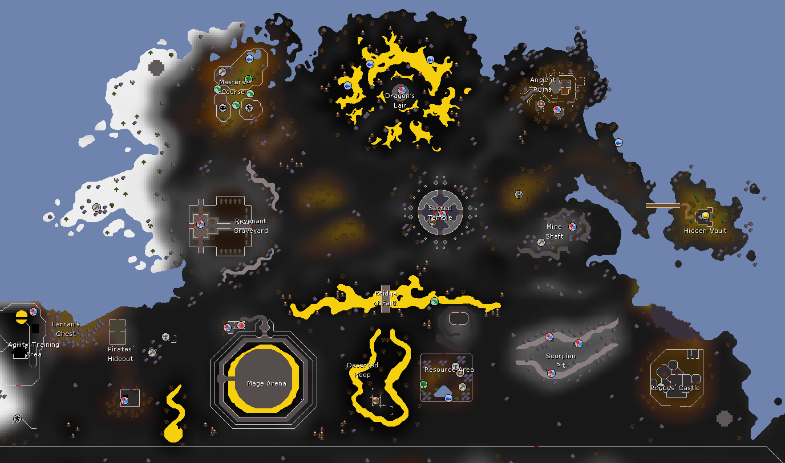

The Forinthry Castle is a clan-controlled stronghold in the deepest part of the Wilderness, beyond the Bridge of Fate from the Wilderness Expansion proposals. It is a place of both great utility and great danger.
A clan that occupies the Forinthry Castle gains access to powerful facilities that make Deep Wilderness content far more convenient. But any clan can attempt to siege and take it.

- The area around the castle is protected by a passable barrier. Only players who are part of a clan may enter. Cannot be entered while teleblocked. It's similar to the Ferox Enclave barriers.
- An empty castle is claimed simply by entering it. The clan may also need to clear NPC defenders or interact with a clan insignia to activate it.
- Any clan size can enter. No minimum player requirement to claim. But you must be a clan leader or have similar permissions.
- The clan leader (or activating player) then chooses a God Alignment for the castle, which affects all clan members inside.
- Alignment can only be switched if the castle has been uncontested for 30 minutes.
![]()
All clan members entering the castle are automatically given Blessed Status for free. The 100k activation fee is waived, though death fees still apply. Ideal for non-PvP clans doing World Bosses.

Clan members' overhead statuses are not interfered with. Players enter with whatever status they already have. Maximum flexibility for mixed groups.

All clan members entering the castle are automatically Skulled. Signals the clan is ready for a fight, and naturally deters challengers unless they are equally committed.
Additionally, any outsiders entering a Blessed Forinthry Castle will count as "initiating attack", thus allowing all of the Blessed Players of the castle fight back in self-defense.
Each facility requires a certain Skill level to repair or upgrade. Facilities may use various skills including Construction, Magic, Smithing, Crafting, Prayer, etc. Any clan member may contribute. Every facility has ~100 health and can be destroyed by invaders. Once destroyed, it cannot be repaired for one hour.
Two separate bank locations within the castle walls. Essential for extended World Boss trips without leaving the Wilderness.
Restore Prayer points without needing to leave the castle or the Wilderness.
Restores HP, Prayer, and run energy, similar to the pool in a Player-Owned House or the Ferox Enclave.
Connects to all other Wilderness Obelisks. Allows rapid clan movement across the Wilderness.
Grants all clan members free teleports to all normally teleportable Wilderness locations.
Enables crafting of Forinthry Castle Teleport Tablets. Clan members can use these to teleport directly to the castle, but only while your clan controls it.
 Combat Amplifier
Combat AmplifierGrants all clan members +25% damage against Wilderness World Bosses. A major incentive for PvM-focused clans.
Allows clan members to temporarily set their respawn point to the Forinthry Castle. Ideal for World Boss runs and surviving sieges. May have a 5-minute lockout after PvP deaths.
NPC monsters, including Reanimated Rune Dragons, that defend the castle's rooms. Similar to POH dungeon monsters.
Sturdy doors that protect rooms containing key facilities, slowing down invaders and buying defenders time.
An opposing clan can invade at any time. The exact conditions for a successful takeover are open to design.
Here's some possibilities, but it would really depend on beta testing.
- The opposing clan must occupy a majority of players within the castle barrier simultaneously.
- The opposing clan must eliminate 90% of the defending clan's players within the barrier.
- If 70% of the defending clan is removed and 70% of the attacking clan occupies the barrier, control transfers and other clans are locked out for 1 hour.
- The barrier applies a 30-minute death lockout. Players killed by another player inside cannot re-enter unless let back in by their clan, eventually forcing one side out organically.
Some combination of the above is likely the right answer, requiring both numbers advantage and sustained pressure to prevent griefing by small roaming groups.
This suggestion would not be complete without something to actually use the castle for.
In order to obtain materials to build your Forinthry Castle's facilities with, you must kill monsters within the Deepest Wilderness.
Monsters within that area will drop "Forinthry Tokens". You can think of them as being like "Magic Bricks" which you literally use to build your facilities.
There could also be some Deepest Wilderness gathering skills involved here, but let's be honest, we want to be in the Wilderness to kill things, not mine rocks.
This creates a full-on gameplay loop for that area of the Wilderness.
- Your clan claims the Forinthry Castle on a chosen world.
- Your clan has to farm monsters for Forinthry Tokens to upgrade the castle.
- The castle provides various benefits, making it easier to stake things out in the Deepest Wilderness.
- At max level, you have the best benefits for your clan to now tackle the Wilderness World Bosses.
These are revenants that only appear after players die in the Deepest Wilderness.
There is a 10% chance of one spawning, and it has equipment and stats equal to the player who died.
Dead player revenants use protection prayers with 40% effectiveness against normal players, and they switch prayers faster than Tormented Demons and Demonic Gorillas while also switching reactively to you, making it optimal to kill them via hybridding or by teaming up with a friend.
These are stronger versions of the Zarosian versions of Spirital Warriors, Mages, and Rangers.
.webp)
.webp)
.webp)
The difference with these guys is that they use Deflect Curses with 100% effectiveness against players, requiring you to bring a friend to fight them.
I think the Deepest Wilderness, with a focus on teams and clan content, is the only place you could really get away with a design like this.
Alternate name: Forinthry Warriors, Mages, Rangers
These are enemies that will tribrid against you.
Twisted Demons have horribly twisted faces, and their right arms are particularly dangerous.
The Twisted Demon will switch between 3 attack styles depending on your overhead prayer, trying to hit past it.
When it switches styles, there will be a noticeable difference on the enemy's model and an animation.
Melee: Its arm gains a red tint or vein along it, and it then hammers down on you with a heavy melee strike.
This will either be a crushing punch or a stab or slash with its claws.
Sometimes he will rapidly switch to melee and then run at you.
Mage: The red tint on the arm becomes blue, and the Twisted Demon starts shooting an orange or blue fire projectile from its palm, as if it's lobbing it at you. Similar to the mages from the Fight Caves.
Range: The arm gains a green tint, and it grows some spikey spines on its shoulder, which the Twisted Demon then shoots at you similar to a Dagannoth or the rangers from the Fight Caves.
Twisted Demons have 3 special attacks, one for each style, which it can only use after having attempted at least one normal attack.
The special attacks all work the same with 50% increased accuracy and damage and an alternate animation.
Pray correctly!
The Twisted Demon will also run around random tiles near you, almost like a player might while PKing.
Or he might have short range teleportation, just to make it different.
As a unique rare drop, it drops its arm, the Twisted Demonic Gauntlet, a new tribridding weapon similar to Salamanders and stronger than the Tecu salamander.
The gauntlet is charged via Twisted Essence dropped by the Twisted Demons and Wrath Runes.
It can use both an inherent spell and an inherent ranged attack, and the special attacks of the Twisted Demon.
It's just a slightly stronger attack with 25% increased accuracy and damage.
The big downside to this weapon, is that when you switch attack styles, there is a delay, an animation, and it changes the color and design of the weapon, making it very obvious what style you're using.
It also counts as a 2-handed weapon because it's very big and bulky.
Finally, to make the suggestion really really complete, we would need a few full bosses for the Deepest Wilderness.
This may be a good opportunity for us to give Jagex a second chance at realizing the "Wrathmaw" boss design.
Yes. I know it was controversial. But literally, they have the skeleton of an already designed boss sitting right there.
We all know what we really didn't like about it. The fact that it was an extremely limited boss with a FOMO design where it appears at extremely limited times.
I know many also don't like the fact of it coming from the Wilderness.
Well, the entire point of every suggestion I'm making is to help improve the Wilderness not just for PKers, but also for PvMers or players who don't so much like the PvP part of it.
Let's give things a chance, yea?
Besides, we can do way better than the original Wrathmaw design, everyone.
I have 3 major boss ideas for Wilderness World Bosses, all of which roam areas of The Deepest Wilderness, beyond the Bridge of Fate.
- The WildyWyrm (yes it's just Wrathmaw 2.0 but with WAY fairer rules)
- Big Fat Ghost Boss
- Underground World Boss
Personally, I think a "Wilderness World Boss" or two fits that "clan content" role perfectly. World boss concepts seem to sit between wanting to be team content or wanting to be clan content.
But I know this idea already has a very bad reputation because of the whole thing with Wrathmaw a while back.
And also, PvP clans just have a bad reputation in general.
And also, if they made a boss "just" for clans, that would be excluding a LOT of the playerbase who isn't in clans, wouldn't it? It would be excluding the small teams, right? Much less solo players. And it would be excluding anyone who doesn't want to step foot in the Wilderness?
Well, I think if the Wilderness were made better and more palatable, maybe these perceptions could change over time.
Wildy Teams might encourage the formation of new clans, and maybe more "pleasant" ones.
Blessed Status makes the Wilderness more open to people who are not used to PvP, so maybe even some non-PvP clans could get involved.
If the reputation of the Wilderness ever changes, and the reputation of clans, then maybe some day we can justify something like Wrathmaw that day.
Maybe the "Sandmaw" approach where a non-Wildy version is offered too, might work out?
That said, I do also like to think about how to take a disliked proposal and make it better.
Wrathmaw for example, I'm not against the idea of a world boss, or even a world boss in the Wilderness, but I agree with everyone who doesn't like the idea of it being time-gated.
If it's just a 20,000 HP boss only suited to be tackled by a ton of players, as I said, it would make it very difficult content to engage in for non-clans.
So my thought is this:
The idea is that the boss starts as a mound on the ground - a Wilderness Strykewyrm, or WildyWyrm.
You can disturb the mound to make the WildyWyrm appear.
This enemy is actually just a fairly normal enemy that is always available in some area of the deep wilderness.
This enemy is suitable enough for a player to kill even if they are solo.
If you kill the WildyWyrm, you'll be able to loot the corpse... but an even bigger WildyWyrm will come by and eat its head.
The Bigger WildyWyrm will have more health, possibly some more mechanics, and be generally stronger - like a delve boss.
You can probably still solo it.
If you kill the Bigger WildyWyrm, an Even Bigger WildyWyrm will appear to eat its corpse.
Now you would definitely benefit from having a friend or a small team of 5-6 to fight it.
If you kill the Even Bigger WildyWyrm, an Engorged WildyWyrm will spawn.
If you kill this one, then Wrathmaw will appear to eat the Engorged WildyWyrm's corpse, and you get the full Wrathmaw fight.
At this point, maybe a team of 5-6 could take it on, but you really want to fight it with a clan.
This way, smaller teams or clans have a version of the boss they can fight without requiring a huge amount of players, and they can fight up until they point they are unable to beat the next version of the boss. It scales up naturally.
With no time gating, now the boss can be "summoned" at any point in time whenever there's a group of players who want to tackle it, or whenever someone or some Jagex devs want to host a mass event.
I've had similar concept for a world boss in my head since more than a good decade ago. I actually came up with this for Blade and Soul, but it might fit well in RuneScape.
It's another Teams Open-World Delve Boss.
To summon the Big Fat Ghost Boss, there is an area called the "Valley of Souls" in The Deepest Wilderness.
If players walk around here, ghosts start spawning in numbers matching the number of players nearby.
If you kill all the ghosts, they will merge together to form the Big Fat Ghost Boss, who is stronger if there were more ghosts killed to create him.
It's kind of similar to the spawn conditions of Maledictus, however, it can be done on-demand at any time, unlike Maledictus.
These ghosts were all old Zarosian followers from before the time Zamorak took over, so the Big Fat Ghost Boss naturally will use Shadow and Ice magic.
He will also clumsily punch you, or call ghostly hands from the ground and use Soul Split.
If you kill him, you get a drop, but then he will reform again into a Bigger Badder Fat Ghost Boss, who has more health and mechanics than the last one.
You get the idea. It builds up to becoming like a world boss.
Also, if the boss gets to a point where the team or clan fighting it cannot kill it, the boss will randomly roam anywhere in its area, and only despawns after an hour or so.
This means that some clans might also be able to hop around worlds to finish off leftover kills, if they want.
Do I have ideas for what it drops? Yes, but the focus is more on the design of the boss and Wilderness mechanics.
I once read a Reddit suggestion for something like the L4D2 Witch as a boss that runs towards PKers and chases them down with very powerful melee attacks. And I mean insanely lethal melee attacks.
I think it'd be cool if there were a big open underground cave with something like this guarding a big door to a treasure chest, or something.
The boss itself is meant to be very powerful and difficult to kill, but not impossible. Maybe the big door it guards leads to a deeper layer of the cave, with another more powerful version of this boss... like a delve!
Or perhaps the goal isn't necessarily to kill it, and rather to get past it... and loot a Forinthry Vault!
And the Forinthry Vault is guarded by 2 monsters... animated sets of Torva Armor.
Naturally, looting the Forinthry Vault and killing the world boss could offer totally different rewards.
At the very least, you'd expect to find a great stash of Forinthry Tokens in the Forinthry Vault, and looting that should be easier than killing the boss.
I just think the idea of a boss that runs at people is funny.
The Wilderness Nightmare?
Wilderness World Bosses are bound to probably have some really good drops. It'd suck if you just got PKed for them as soon as you got it, having dodged whatever PKers were after you during the fight.
In which case, you might receive a "Forinthry Casket" as a drop. The special thing about this is that it is always protected on death and does not override your 1-3-4 protected items, acting as like a 5th protected item.
Or a 6th protected item if you have a Forinthry Artefact.
However if you have 2 or more, the extra ones are not protected.
That way, even if you die after obtaining the drop from the Wilderness World Boss, at least you get to keep what you got for all that effort.
The Forinthry Casket will hold the drop from the Wilderness World Boss.
 For PvP Clans
For PvP Clans
- Zamorak alignment signals readiness for war, and pretty much locks out Blessed Players
- Respawn Anchor keeps clan members fighting without running back
- Return Teleport Tablets for rapid reinforcement
- Controlling the castle is prestige. A visible symbol of dominance on that world
- Turns "protecting an area" (a real clan behaviour) into legitimate gameplay
For PvM Clans
- Saradomin alignment = free Blessed Status for all members
- Combat Amplifier gives +25% damage on World Bosses nearby
- Banks and Rejuvenation Pool eliminate the need to leave the Wilderness between kills
- Respawn Anchor means deaths to bosses don't end the trip
- Wildy Teleport Nexus saves supplies on getting there
Clans "protecting" areas of the Wilderness is often considered a problem. A small group monopolising content and driving away everyone else.
The Forinthry Castle turns this problem into gameplay. Instead of informal, unenforceable territory control, the castle gives clans a legitimate, mechanical reason to occupy and defend a location, with clear rules, clear risks, and clear counterplay.
It also creates a reason for rival clans to engage with each other, not just to grief, but to compete for a valuable stronghold. Or just to grief and have some bragging rights over who's clan is better.